本项目基于近红外光谱无损分析技术，采用 1stDer+SNV 对光谱数据进行预处理， 以消除基线干扰。融合 UVE 提特征建立 PLS 预测模型，能够快速、无损分析桑叶嫩度。
本项目基于近红外光谱无损分析技术，采用 1stDer+SNV 对光谱数据进行预处理， 以消除基线干扰。融合 UVE 提特征建立 PLS 预测模型，能够快速、无损分析桑叶嫩度。
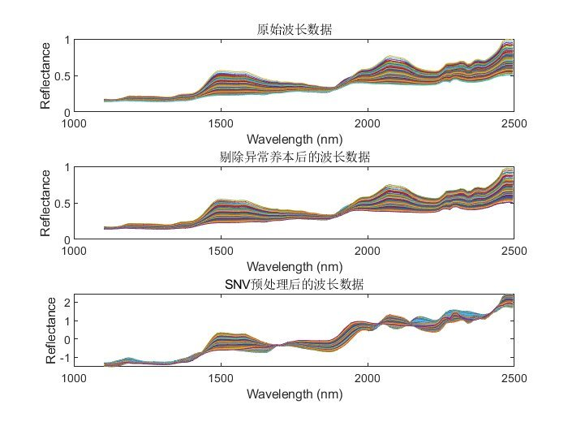
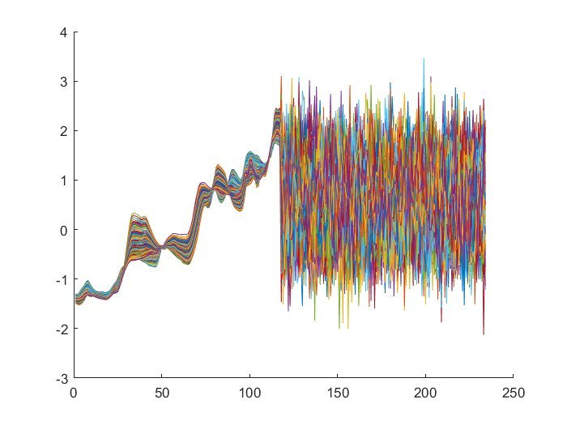
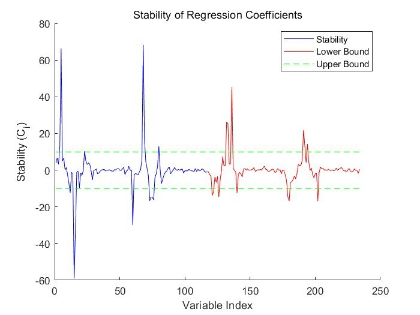
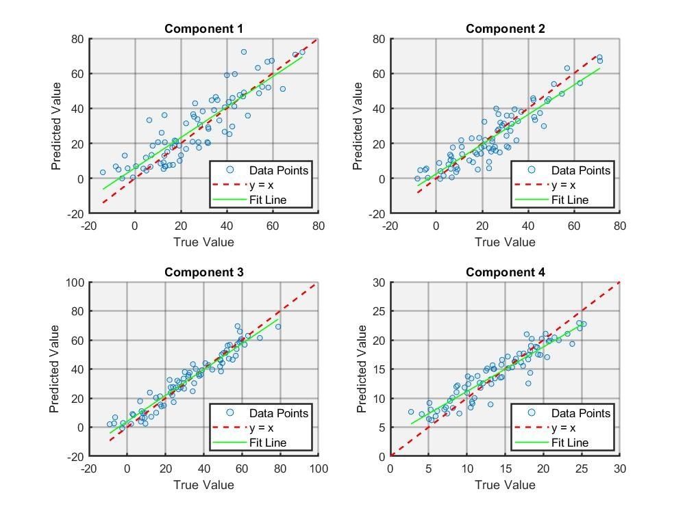
采用SIFT获得匹配点对，融合FLANN进行匹配，并使用RANSAC消除离群点，精准识别"STOP"停止点位。
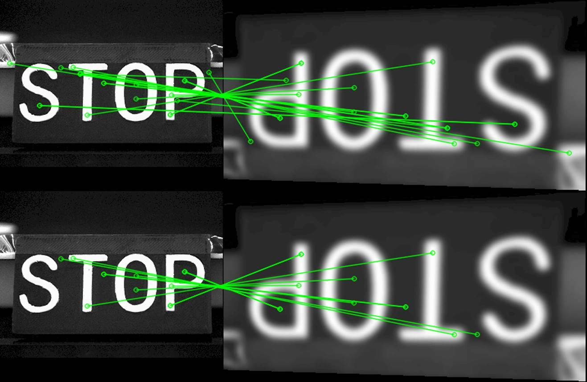
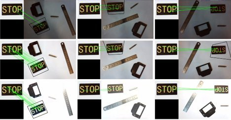
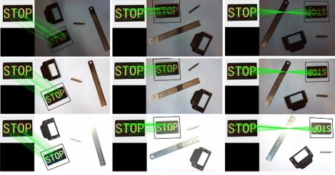
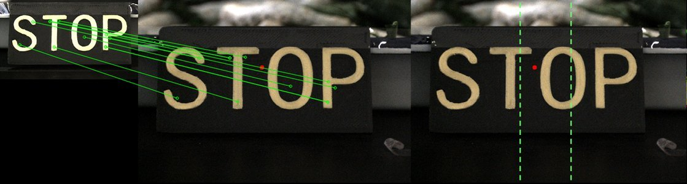
融合阈值与SAM进行蚕图像分割，对掩码使用
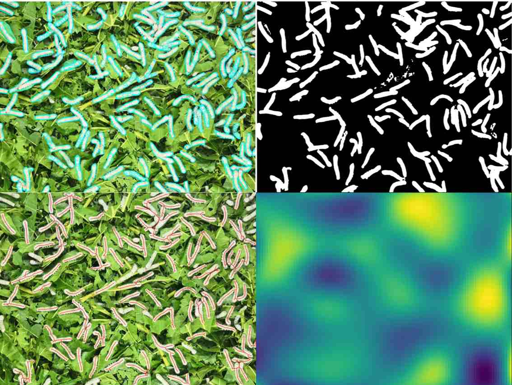
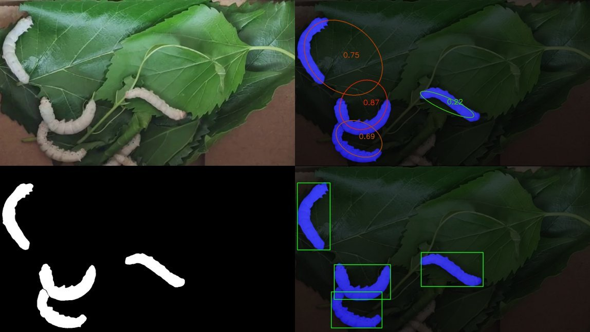
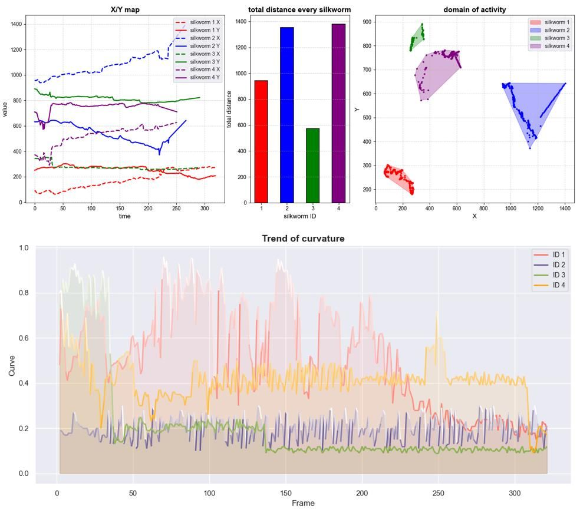
对数据集进行了数据增强处理，包括旋转、缩放、裁剪等操作。对于YOLO11，将单头自注意力机制(SHSA)集成至YOLO11的C2PSA模块中， 并融合自适应阈值焦点损失函数(ATFL)，通过降低易分类样本的损失权重来集中模型的注意力于难以分类的样本上， 缓解类别不平衡问题。
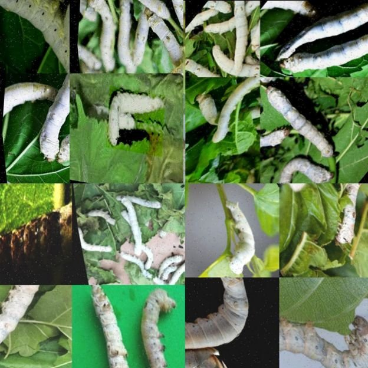
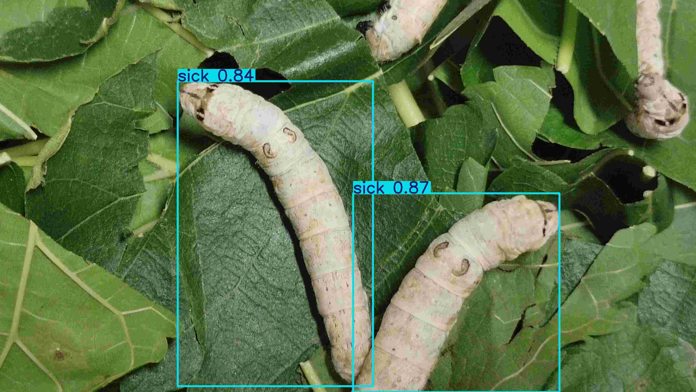
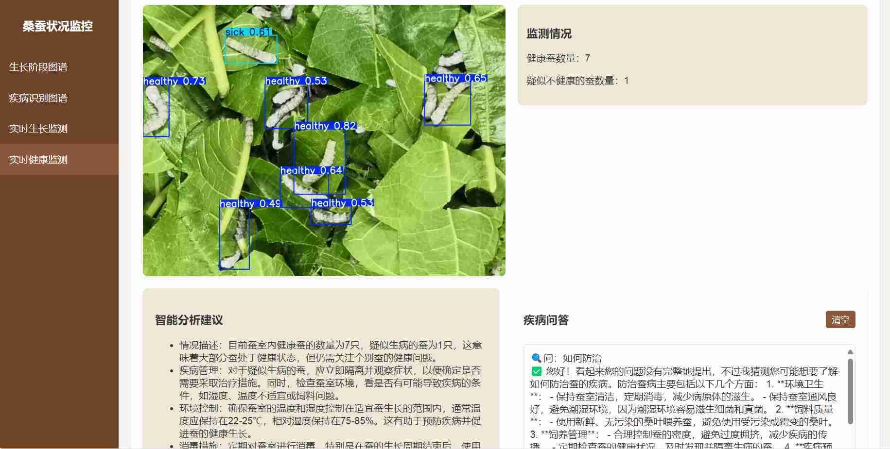
以deepseek-llm-7b为基座模型，自制Q&A数据集LoRA微调，loss收敛于0.2551，专业领域BLEU与ROUGE均高于85，泛化能力相当。 基于Neo4j，融合LLM提示词提取实体、关系、属性等构建蚕桑知识图谱， 创新性融合BERT编码图路径，分别从实体抽取、消歧、路径Rerank等方面构建graphRAG完成后端模型API接口（FastAPI），缓解幻觉问题。 最后基于ESP32开发板改进开源后端服务器，搭建蚕桑AI语音助手， 并模拟MCP协议执行Function Call语言控制物联网设备，摆脱了传统固定指令式智能家居控制。
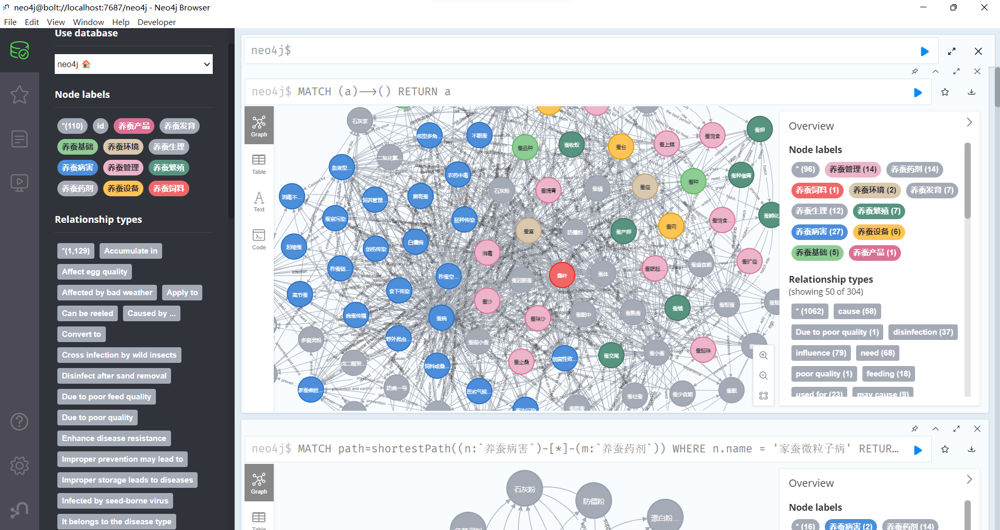
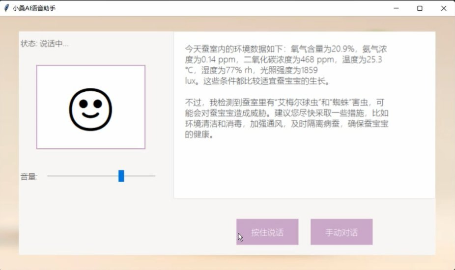
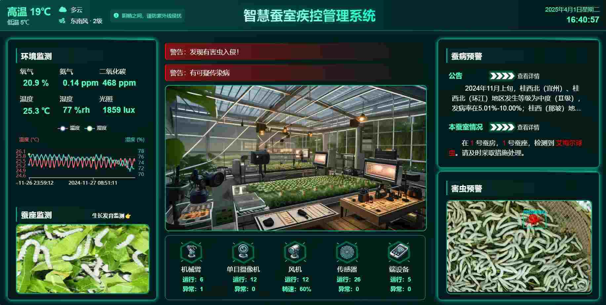
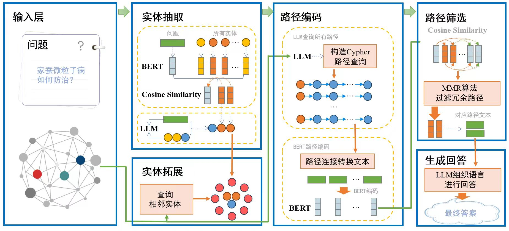